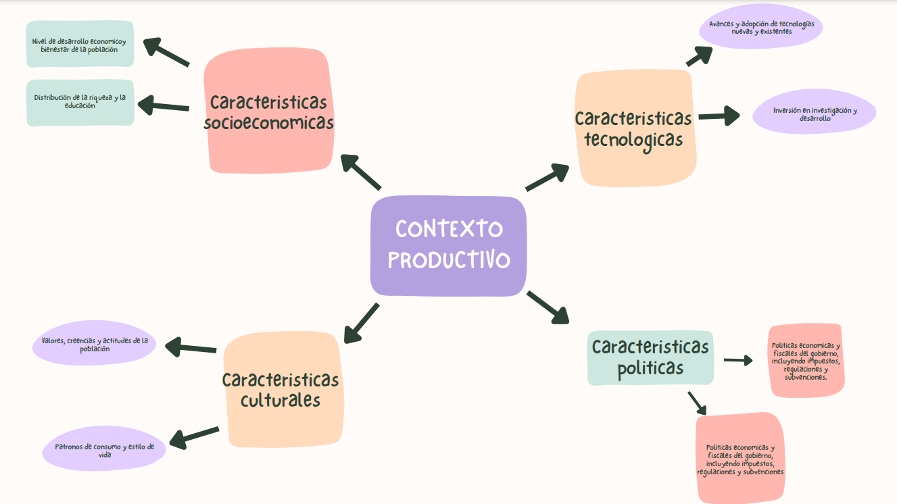

GA4-240202501-AA1-EV02
In this task I was very disoriented since I did not fully understand it and therefore I ended up doing the task completely in Spanish.
English homework
GA4-240202501-AA1-EV02
In this task I was very disoriented since I did not fully understand it and therefore I ended up doing the task completely in Spanish.
GA4-240202501-AA1-EV02
This task is a diagram that represents a task performed by me in a work environment. A start, possible options and an end are specified.
GA4-240202501-AA1-EV02
This assignment is an essay that deals with an event that occurred in a work environment. Contains a middle and an end
This task is about the importance of good management of coexistence in the work and school environment.